project
Breitner & Payne
1. A paint factory in Wexford.
2. A digital replica to interact with the production line in real-time.




ORBIT
PAN
ZOOM


JSON Data
The engine receives real-time factory data in JSON format. An Unreal Engine "Manager" Blueprint parses the data and sends them to other Blueprints responsible for the visualization functionality.
Unreal Engine Server
Several other Blueprints receive the parsed data from the Manager Blueprint and update the UI and objects in the scene like machine colors, production counts, active views and alert notifications.
Web-based
Leveraging Pixel Streaming, the factory visualization requires no local processing power. It runs entirely on the server side and streams video output to any browser. Inputs from the user’s keyboard and mouse are forwarded instantaneously to the engine.
Mobile App
The mobile app is the remote control for the factory. It allows a quick overview of the factory’s operations, change factory settings and switch between camera views in the visualization.


Other projects